| Home / Dive Resorts / Live-Aboards / Snorkeling / Who We Are / Book a Trip |
BELIZE ECO-TOURS
, part II.
© Copyright John Hessburg, U.S. Dive Travel Network -- All Photo Rights Reserved.
|
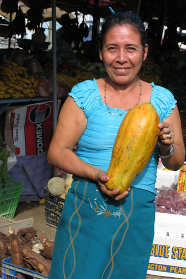 |
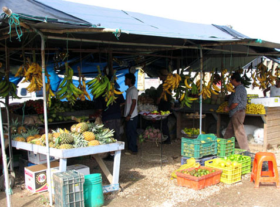 |
|
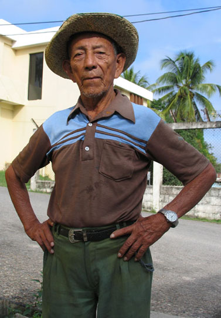 |
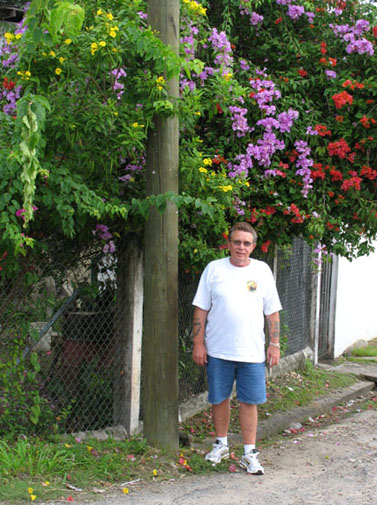 |
|
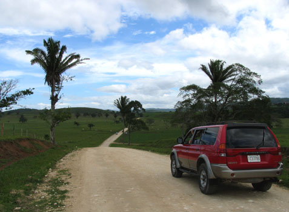 |
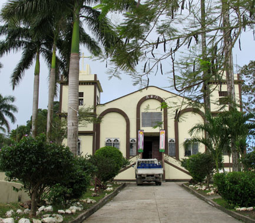 |
|
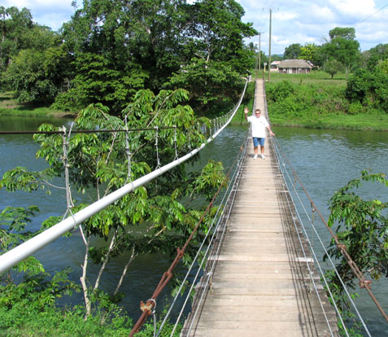 |
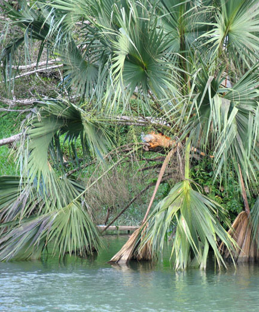 |
|
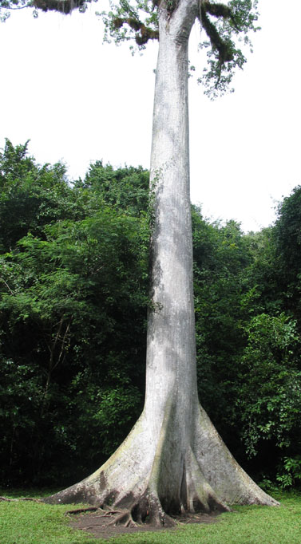 |
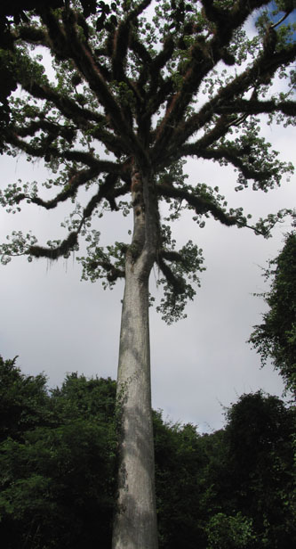 |
|
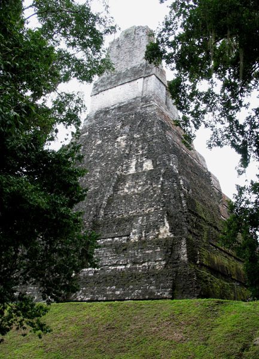 |
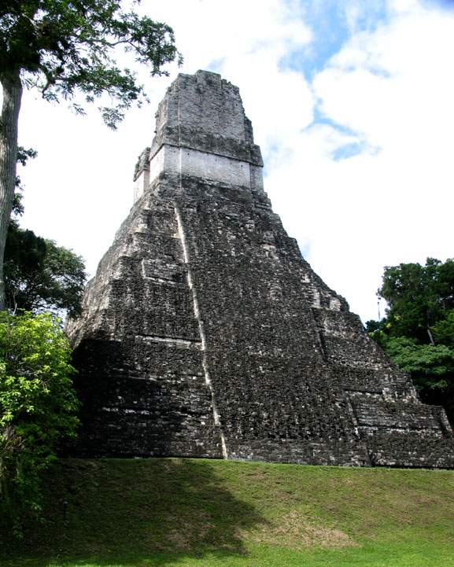 |
|
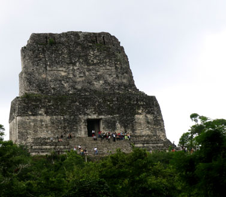 |
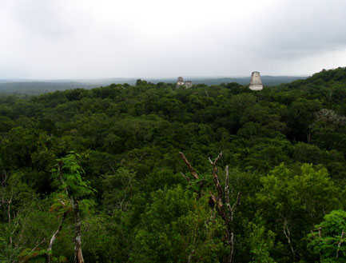 |
FOR MORE INFORMATION or RESERVATIONS:
Please feel free to contact:
John Hessburg, General Manager
Susan Hessburg, Operations Manager
U.S. DIVE TRAVEL Network
PMB 307 / Suite # 116
15050 Cedar Avenue S.
St. Paul, MN, USA 55124-7047
Voice Mail: 952-953-4124
E-mail: divetrip@bitstream.net
Website: www.usdivetravel.com
******************************************************
IMPORTANT REMINDER about PRICES & TARIFFS:
All prices for Belize eco-tours & Tikal Ruins tours listed here are subject to possible change in this steadily evolving travel market. Lodging, side tour & diving prices are traditionally stable, while air prices can fluctuate daily. Until air tickets are issued, all airlines reserve the right to change airfares without notice -- an industry standard per FAA rules. We at U.S. Dive Travel will price-protect you to the utmost of our professional ability; & that has been our pledge for one decade now. Our experts for Belize eco-tours & Tikal Ruins tours normally secure excellent wholesale discount air tickets for our clients who book early enough to secure limited seats in the best price categories. Remember please, the federal government has deregulated all U.S.-based airlines, so only they control their pricing -- not any travel professionals. Early is good when seeking the best air ticket rates for your Belize eco-tours & Tikal Ruins tours.
Unless specifically noted, these above prices for Belize eco-tours & Tikal Ruins tours are only the land-based portion of the vacation, not air tickets, in most cases reflecting double-occupancy rooms. At many resorts, there will be no triple-occupancy rooms offered. Some exceptions will be noted on these Belize eco-tours & Tikal Ruins tours. International air tickets & commuter "island-hopper" seats are always extra above these land costs. Nominal service fees are also extra for air tickets & the vessel + side tour components. The baseline tariffs for all clients start at $35 per person for the land portion + $20 pp for the air tickets. Late-booking clients may receive slightly higher tariffs on the lodging + diving at many of our dive resorts.Please feel free to call us any time for more details about Tikal, Tikal ruins, Belize eco-tours, Belize eco tours, Xunantunich, Mountain Pine Ridge, Guanacaste, Belize Zoo, Windy Hill, Windy Hill Resort -- 952-953-4124.
The preferred payment mode for all of our dive resorts, side tours & air ticket specials -- in particular Tikal, Tikal ruins, Belize eco-tours, Belize eco tours, Xunantunich, Mountain Pine Ridge, Guanacaste, Belize Zoo, Windy Hill, Windy Hill Resort-- is by e-check, ACH or wire transfer in U.S. dollars. All clients for our Belize eco-tours & Tikal Ruins tours living outside the USA or Canada will need to pay for their Belize vacations via direct wire transfer only. No personal checks will be accepted for any Belize eco-tours or Tikal Ruins tours. Thank you for your gracious understanding. Our service level is the highest & our prices the lowest in this industry, & thus we need to preserve a reasonable margin. For published-fare air ticket bookings, USDT always accepts Visa & Mastercard. For ultra-discount wholesale air tickets on these Belize eco-tours & Tikal Ruins tours, USDT accepts only cashier's checks or wire transfers, please.
Remember, all tropical vacation clients to all foreign destinations will be asked by local officials overseas, upon departing the airport on your final day, to pay a nominal government departure tax, usually between USD $35 - $45 per client. USDT cannot collect this tax beforehand, so you simply pay it down there, in your host country. Be sure to stash away a little cash for this final moment at the airport, so you'll get your exit visa stamped quickly with no fuss; & away you go. Best of luck with your Belize eco-tours & Tikal Ruins tours. We hope your Belize vacation is a safe & satisfying adventure. Blessings & best wishes with ALL your Belize eco-tours & Tikal Ruins tours.
Best fishes too!
>////*> <*\\\\<
John Hessburg & Susan Hessburg, Mgrs.
U.S. Dive Travel Network.
| Home / Dive Resorts / Live-Aboards / Snorkeling / Who We Are / Book a Trip |
© Copyright U.S. Dive Travel Network.